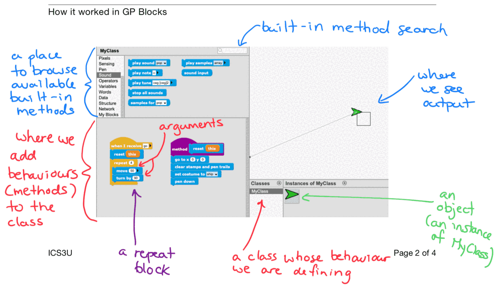
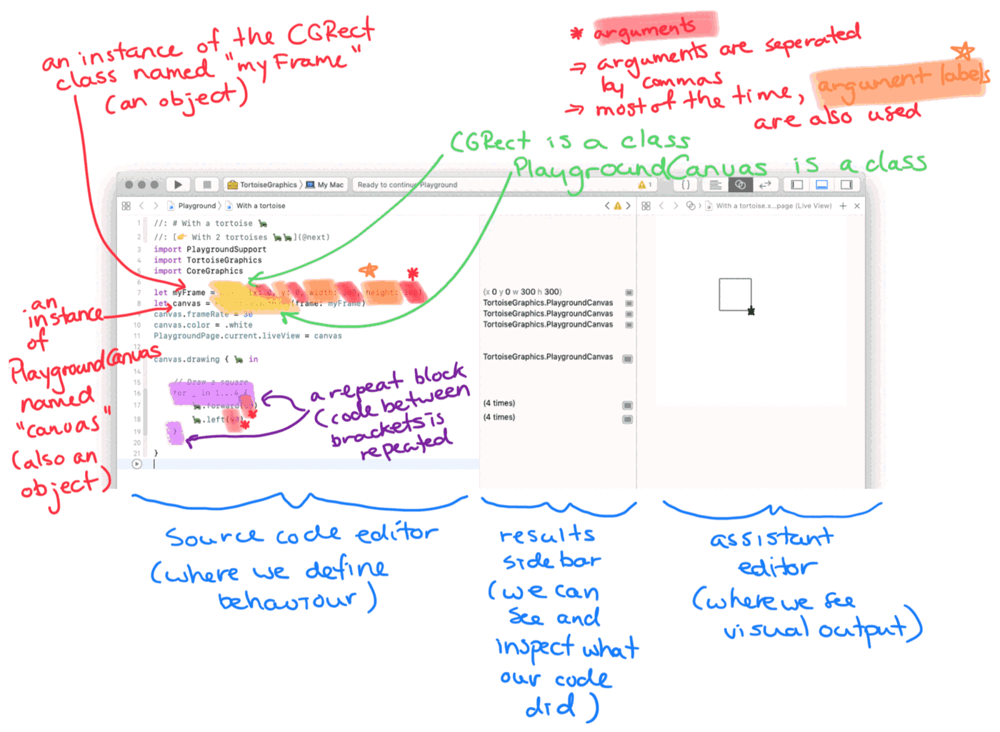
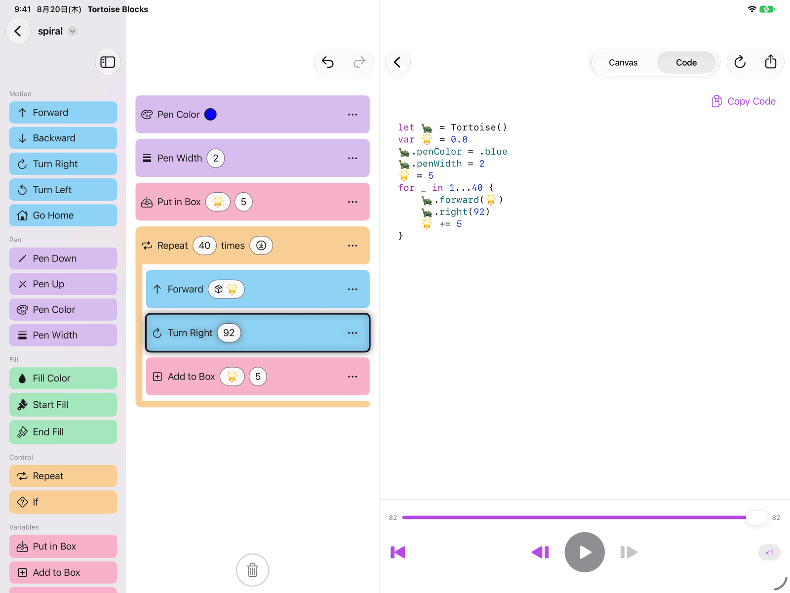
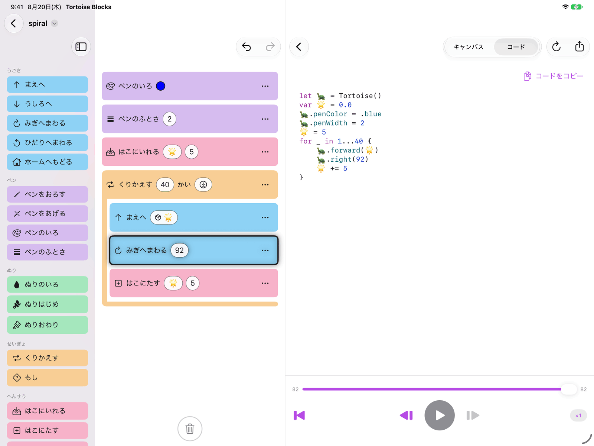

Tortoise Blocks
Why this app exists
Not one of the ideas in Tortoise Blocks was invented here. They were inherited — from a language called Logo, from a researcher who died in 2016, and from a classroom in Japan in 1994.
A tortoise you give directions to
Almost all computer drawing is done from a bird's-eye view. You look down at the page, name a coordinate, and draw a line to it.
Turtle graphics works the other way round. There is a tortoise standing on the page, and it leaves a line behind it wherever it walks. All you ever do is give it directions — turn right twenty degrees, walk forward five steps — and the drawing is whatever trail it leaves. Same picture in the end; opposite place to stand while making it.
That sounds like a small difference until you try to draw something. From above, an equilateral triangle needs trigonometry to find where its third corner lands. From the tortoise's back it needs no mathematics at all — it is three walks and three turns, and a child can see why.
From above
addLine(to: (10, 0)) addLine(to: (5, ?)) addLine(to: (0, 0))
The question mark is where the trigonometry goes.
From the tortoise
forward(10) left(120) forward(10) left(120) forward(10)
No question marks. Just a repeated pattern.
And when the turn is wrong, the drawing says so at once. Put 100 where 120 belongs and the triangle does not close; put 140 and it overshoots. So a child changes the number and runs it again, and again, and somewhere in there stops guessing and starts knowing. Try, look, change, try again — that loop is not a side effect of turtle graphics. It is the whole method.
Tortoise Blocks is an app for exactly that. The blocks in its palette — Forward, Turn Left — are the forward and left in the figure above, and when a child snaps them together and presses play, the tortoise on screen sets off and leaves its line behind it. The triangle above is a program you can build in it: Forward 10 and Turn Left 120, wrapped in Repeat 3 times.
A classroom in 1994
The app's author met turtle graphics in 1994, in his second year of junior high school, in a computer class. The machine was a Fujitsu FM R-50 running MS-DOS, the software was called LogoWriter 2, and the subject was programming itself.
He got carried away, and what he made drew a reaction from his classmates. That was his first time succeeding at programming, and it is the reason he writes software for a living now — which is to say that this app is not a project about childhood learning so much as one paying a debt to it.
Seymour Papert
Turtle graphics was never a drawing toy. It was an argument, and the person making it was Seymour Papert, who had spent five years in Geneva working with the psychologist Jean Piaget on how children's thinking develops. In 1967, with Wally Feurzeig and Cynthia Solomon, he designed Logo — around what he would later call constructionism: that children learn best while building something real, something that works, that they can show to somebody, and that fails in ways they can see and fix.
Which is why the tortoise takes its directions the way it does. You cannot tell a tortoise to go to coordinate (5, 8.66); you tell it to turn and walk, the way you would tell yourself.
Papert worked with LEGO from 1985, and the company's Mindstorms robotics kit took its name from his 1980 book. A great deal of the very idea that children learn with computers at all starts with him.
Building Tortoise Graphics, 2016
Two things happened close together in 2016. In June, Apple announced Swift Playgrounds: Swift on an iPad, for people learning to code. On 31 July, Seymour Papert died.
That news is what moved the app's author to start building. If turtle graphics could be made to run inside Swift Playgrounds, then children could have on an iPad what he had had in 1994. A week later, there was something that ran.
That was Tortoise Graphics, a turtle graphics engine written in Swift, distributed as a Swift Playgrounds Book that a child could easily try on an iPad. The name is "tortoise" rather than "turtle" for no better reason than that its author prefers the land-dwelling kind — which is also how this app got its name, and why the mascot has feet.
A school in Ontario
Two schools wrote to say they wanted to teach with it. One was Lakefield College School in Ontario, Canada — then a boarding school of about 360 students — which used it in its introduction to computer science. The course ran in a particular order: start with block-based programming like Scratch, move to text-based programming with Tortoise Graphics, and finish with each student drawing a shape of their own in code and plotting it on a pen plotter.


Which is why this app is blocks
That course order is the design of Tortoise Blocks, more or less directly. A child starts where Lakefield's students start — blocks that snap together, nothing to spell correctly, nothing to get wrong before anything can run at all. But the code pane is right there beside it, showing the very same program as real Swift, syntax-colored, ready to copy out.
Blocks and Swift are not two different things here — they are one program, shown two ways. One day the blocks will not be enough, and that is the day this app is built for: the day a child outgrows it.

なぜ、このアプリを作っているのか
Tortoise Blocks の中にある考えは、どれもここで生まれたものではありません。受け継いだものです。もとをたどると、Logo というプログラミング言語と、2016年に亡くなった一人の研究者と、1994年の日本のある教室に行き着きます。
カメに道順を教えて、絵をかく
コンピュータで絵をかくとき、ふつうは鳥の視点に立ちます。紙を上から見下ろして、座標を指定して、そこまで線を引く。
タートル・グラフィックスは、その反対です。紙の上にカメが1匹立っていて、歩いたあとに線が残ります。人がやることは、そのカメに道順を教えることだけ。右に20度まわって、前に5歩あるく。カメが通ったあとが、そのまま絵になります。できあがる絵は同じでも、それを描いているあいだに立っている場所が正反対です。
この違いは、実際に何かをかこうとしたとたんに効いてきます。上から見た正三角形は、3つめの頂点がどこに来るのかを三角関数で求めなければなりません。カメの背中からなら、数学はまったく要りません。3回あるいて3回まわるだけで、しかも「なぜそうなるのか」が子どもにも見えています。
上から見ると
addLine(to: (10, 0)) addLine(to: (5, ?)) addLine(to: (0, 0))
この「?」のところに三角関数が入ります。
カメから見ると
forward(10) left(120) forward(10) left(120) forward(10)
「?」はありません。同じ形の繰り返しだけです。
そして、まわる角度をまちがえれば、絵がすぐにそう言ってくれます。120のところに100と書けば三角形は閉じないし、140と書けば行きすぎる。だから子どもは数字を変えて、また動かして、また変えて、そのうちのどこかで、あてずっぽうをやめて分かるようになります。やってみて、見て、直して、またやってみる。この繰り返しはタートル・グラフィックスの副産物ではなく、それ自体が学び方そのものです。
Tortoise Blocks は、そのタートル・グラフィックスのアプリです。パレットに並んでいる「まえへ」「ひだりへまわる」は、上の図の forward と left そのものです。子どもがそれをブロックとしてつなぎ、再生ボタンを押すと、画面のカメが歩きだして、あとに線を残していきます。上の三角形も、「まえへ 10」と「ひだりへまわる 120」を「くりかえす 3かい」で包めば、それで描けます。
1994年の教室
このアプリの作者がタートル・グラフィックスに出会ったのは、1994年、中学2年のコンピュータの授業でした。使ったのは富士通の FM R-50 という MS-DOS のパソコン、ソフトは「ロゴライター2」。プログラミングそのものを教わる授業でした。
そこで夢中になって作ったものが、クラスメイトのあいだで反響を呼びました。プログラミングでの、はじめての成功体験です。いま作者がソフトウェアを仕事にしているのは、そのときの体験があるからで、つまりこのアプリは子どもの学びについてのプロジェクトというより、自分が受け取ったものを返そうとしているだけのものです。
シーモア・パパート
タートル・グラフィックスは、お絵かきの道具として作られたのではありませんでした。それは一つの主張であり、主張していたのはシーモア・パパートという人でした。ジュネーヴで5年間、心理学者のジャン・ピアジェのもとで、子どもの知能がどう育つのかを研究していた人です。1967年、パパートはウォーリー・フォイヤーツァイク、シンシア・ソロモンとともに Logo を設計します。のちに彼が「構築主義」と呼ぶ考えを軸にした言語でした。子どもがいちばんよく学ぶのは、実際に動くもの、誰かに見せられるもの、そして失敗したときに自分の目で原因が分かるものを作っているときだ、という考えです。
カメへの命令のしかたがあのようになっているのは、そのためです。カメに「座標 (5, 8.66) へ行け」とは言えません。自分自身に言うのと同じように、まわれ、あるけ、と言うのです。
パパートは1985年からレゴと協業しており、レゴのロボット教材「マインドストーム」は、彼が1980年に書いた本の名前をそのまま受け継いだものです。子どもがコンピュータで学ぶという発想そのものの多くが、この人から始まっています。
2016年、Tortoise Graphics を開発
2016年、2つのできごとが近い時期に重なりました。6月、Apple が Swift Playgrounds を発表します。iPad で Swift を書ける、プログラミングを学ぶための環境です。そして7月31日、シーモア・パパートがこの世を去ります。
作者を動かしたのは、その報せでした。あのタートル・グラフィックスを Swift Playgrounds で動かせるようにすれば、子どもたちに、iPad の上で1994年の自分と同じ体験をしてもらえるかもしれない。その一週間後には、もう動くものができていました。
それが Tortoise Graphics、Swift 製のタートル・グラフィックス・エンジンです。Swift Playgrounds の Book 形式で配布し、子どもはそれを iPad で簡単に試すことができました。名前が turtle ではなく tortoise なのは、作者が個人的にリクガメのほうが好みだから、というだけの理由です。このアプリの名前も、マスコットにちゃんと足があるのも、そこから来ています。
オンタリオの学校で
「授業で使いたい」という連絡が、2つの学校から届きました。ひとつはカナダ・オンタリオ州の Lakefield College School。当時、約360人が在籍する全寮制の学校で、コンピュータ・サイエンス入門の授業に使われていました。その授業には順番がありました。まず Scratch のようなブロック・ベースのプログラミングから始め、次に Tortoise Graphics でテキスト・ベースに移り、最終課題では生徒が自分の考えた図形をコードで描いて、ペン・プロッターで出力する。
だから、このアプリはブロックから始まる
その授業の順番が、ほとんどそのまま Tortoise Blocks の設計になっています。子どもは Lakefield の生徒と同じところから始めます。つないでいくだけのブロック。つづりを正しく書く必要はなく、動かす前にまちがえようがありません。けれどそのすぐ横にコードのペインがあって、いま作ったのとまったく同じプログラムが、色のついた本物の Swift として見えていて、そのままコピーして持ち出せます。
ブロックと Swift は、別のものではありません。同じプログラムを、2つの書き方で見せているだけです。そして子どもはいつか、ブロックでは足りなくなります。このアプリは、その日のために作られています。子どもがこれを卒業する日のために。
